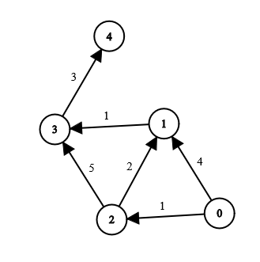

🕸️ Một Vài Bài Toán Lý Thuyết Đồ Thị Rối Não
1. Lý thuyết đồ thị là gì?
Lý thuyết đồ thị là một nhánh của toán học rời rạc và khoa học máy tính, chuyên nghiên cứu về các mạng lưới kết nối. Trái với chữ "đồ thị" (Graph) thường làm ta liên tưởng đến trục tọa độ Oxy hay biểu đồ hình tròn, Đồ thị ở đây mang ý nghĩa hoàn toàn khác: Sự kết nối giữa các thực thể.
Môn học này ra đời một cách đầy tình cờ vào thế kỷ 18 tại thành phố Königsberg. Người dân ở đây có một câu đố: "Làm sao để đi dạo qua đúng 7 cây cầu của thành phố, mỗi cầu đi đúng 1 lần và trở về điểm xuất phát?"
Cho đến khi nhà toán học thiên tài Leonhard Euler xuất hiện. Thay vì đi thử nghiệm thực tế, ông làm một việc chưa ai từng làm: Gạt bỏ mọi chi tiết thừa. Ông nhận ra kích thước hòn đảo hay độ dài cây cầu không quan trọng. Thứ duy nhất quan trọng là các điểm giao cắt (Đỉnh) và sự kết nối (Cạnh). Ngay lúc đó, Lý thuyết đồ thị ra đời!
"Bản chất của vũ trụ không nằm ở bản thân các vật thể, mà nằm ở cách chúng kết nối với nhau." — Triết lý của Lý thuyết đồ thị
Một Đồ thị (Graph) luôn được định nghĩa bằng G = (V, E), trong đó:
- Đỉnh (Vertex – V): Là các thực thể độc lập. Có thể là một ngã tư đường, một máy tính, hoặc một tài khoản Facebook cá nhân.
- Cạnh (Edge – E): Là mối liên kết giữa 2 Đỉnh. Nếu là đường 2 chiều (bạn bè Facebook), ta gọi là Đồ thị vô hướng. Nếu là đường 1 chiều (Follow trên Instagram), ta gọi là Đồ thị có hướng.

2. Phân tích bài toán: Tìm đường đi ngắn nhất (Dijkstra)
Bạn đang ở ngã tư S và muốn đi đến ngã tư D trong một thành phố có
N ngã tư. Giữa các ngã tư có các con đường tốn thời gian di chuyển khác nhau gọi là
Trọng số (Weight). Làm sao để tìm ra lộ trình tốn ít thời gian nhất?
Dijkstra thuộc họ thuật toán Tham lam (Greedy). Nguyên lý cốt lõi là thao tác gọi là Lan
truyền (Relaxation). Ta gọi dist[u] là khoảng cách ngắn nhất từ đỉnh gốc
S đến đỉnh u.
Khi đứng ở đỉnh u và nhìn sang đỉnh hàng xóm v (cạnh có trọng số
w), ta tự hỏi: "Liệu đi từ S đến u, rồi đi thêm w đến v, có nhanh hơn không?"
// Công thức Relaxation kinh điển:
if (dist[u] + w < dist[v]):
dist[v] = dist[u] + w
3. Bảng chạy tay (Trace Table)
Giả sử ta có đồ thị 5 đỉnh (0, 1, 2, 3, 4). Đỉnh gốc xuất phát là 0. Các cạnh:
(0→1: 4), (0→2: 1), (2→1: 2), (1→3: 1),
(2→3: 5), (3→4: 3).
| Bước (Chọn đỉnh gần nhất) | dist[0] | dist[1] | dist[2] | dist[3] | dist[4] | Thao tác Relaxation |
|---|---|---|---|---|---|---|
| Khởi tạo | 0 | ∞ | ∞ | ∞ | ∞ | Chỉ biết dist[0] = 0. |
| Duyệt Đỉnh 0 (dist=0) | 0 | 4 | 1 | ∞ | ∞ | 0→1 tốn 4; 0→2 tốn 1. Cập nhật dist[1]=4, dist[2]=1. |
| Duyệt Đỉnh 2 (dist=1) | 0 | 3 | 1 | 6 | ∞ | 2→1: 1+2=3 < 4 ✓; 2→3: 1+5=6. Cập nhật dist[1]=3, dist[3]=6. |
| Duyệt Đỉnh 1 (dist=3) | 0 | 3 | 1 | 4 | ∞ | 1→3: 3+1=4 < 6 ✓. Cập nhật dist[3]=4. |
| Duyệt Đỉnh 3 (dist=4) | 0 | 3 | 1 | 4 | 7 | 3→4: 4+3=7. Cập nhật dist[4]=7. |
| Duyệt Đỉnh 4 (dist=7) | 0 | 3 | 1 | 4 | 7 | Không có đường đi tiếp. Kết thúc! |
📊 Kết quả: Từ 0 đến 4 ngắn nhất tốn 7 đơn vị. Lộ trình tối ưu: 0 → 2 → 1 → 3 → 4.
4. Code Lời giải C++ (Dijkstra với Priority Queue)
Để Dijkstra đạt tốc độ tối ưu O(E log V), ta sử dụng Hàng đợi ưu tiên (Priority
Queue):
#include <iostream>
#include <vector>
#include <queue>
using namespace std;
const int INF = 1e9;
void dijkstra(int start, int n, vector<vector<pair<int,int>>>& graph) {
vector<int> dist(n, INF);
// Min-Heap: {khoảng cách, đỉnh}
priority_queue<pair<int,int>, vector<pair<int,int>>, greater<pair<int,int>>> pq;
dist[start] = 0;
pq.push({0, start});
while (!pq.empty()) {
int d = pq.top().first;
int u = pq.top().second;
pq.pop();
if (d > dist[u]) continue; // Bỏ qua nếu đã tìm đường tốt hơn
// Lan truyền (Relaxation)
for (auto [v, w] : graph[u]) {
if (dist[u] + w < dist[v]) {
dist[v] = dist[u] + w;
pq.push({dist[v], v});
}
}
}
cout << "Kết quả từ đỉnh " << start << ":\n";
for (int i = 0; i < n; i++)
cout << " Đến đỉnh " << i << ": " << dist[i] << "\n";
}
int main() {
int n = 5;
vector<vector<pair<int,int>>> graph(n);
graph[0].push_back({1, 4}); graph[0].push_back({2, 1});
graph[2].push_back({1, 2}); graph[1].push_back({3, 1});
graph[2].push_back({3, 5}); graph[3].push_back({4, 3});
dijkstra(0, n, graph);
return 0;
}5. Tổng kết
Lý thuyết đồ thị không chỉ là những thuật toán khô khan như Dijkstra, BFS, DFS hay Kruskal. Nó là một cách nhìn nhận thế giới. Việc làm chủ được cách trừu tượng hóa một vấn đề thực tế thành các Đỉnh và Cạnh chính là bước chuyển mình từ một Coder gõ phím cơ học trở thành một Kỹ sư Thiết kế Hệ thống thực thụ.
🌐 Ứng dụng thực tế: Google Maps (tìm đường), Facebook (gợi ý bạn bè), Internet routing (định tuyến gói tin), tất cả đều dựa trên nền tảng của Lý thuyết đồ thị.